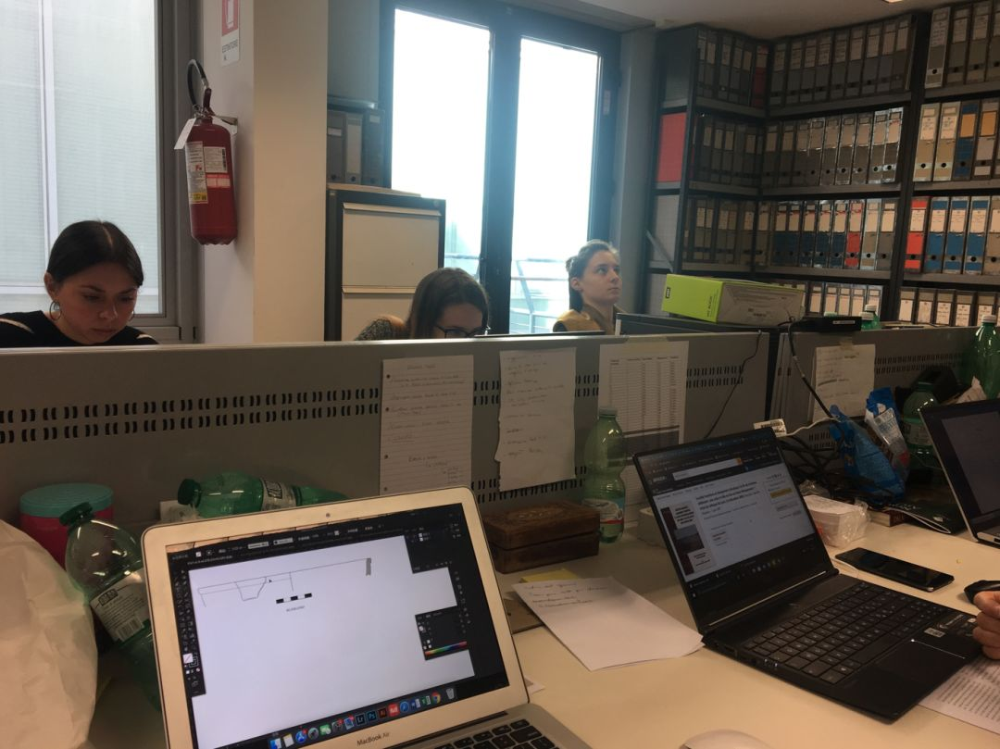

我在海外 | 与意大利交界最长、患者4000+的瑞士仍过于“淡定”
原文链接 备份链接 在欧洲人的眼中，没有病症的人戴口罩出门好比穿病号服逛街。 文 | 周 顺 瑞士是和意大利交界边境线最长的国家，从意大利2月21日第一起病例出现，瑞士意大利语区的提契诺州（Ticino）就有民众呼吁关闭边境，但截至3 …
编者按：
目前意大利成为欧洲新冠肺炎疫情「重灾区」，病死率已攀升至 9.5%。在这样重大灾难面前，个人应做出怎样的选择？意大利留学生莫邪君在日记里记录了他逃离意大利的惊险时刻。如今想来，他可能做出了最正确的决定。
作者：莫邪君
决定出逃
1 月 30 日，意大利出现首发病例后，政府迅即宣布两国停航。2 月 20 日，北部伦巴第大区开始出现大爆发，此后每日新增病例触目惊心。

意大利疫情状况
图源：statistichecoronavirus
这段时间内，意大利政府的反应不可谓不迅速，政府将北部疫区学校关停，封锁 11 个疫情严重的小城镇，在全国各地医院按照应急预案紧急搭建起众多充气帐篷用于患者隔离检测。
作为一个中央政府较为弱势的国家，这样的举措已经是相当迅速而果敢。然而，疫情的蔓延并没有怜悯政府的努力，社会各界对政府的强势手段也不甚买账：疫区里会有人抗议封锁、「要自由」，米兰大街上的人们仍然在聚餐、喝咖啡，南部疫情相对较轻的罗马则更是歌舞升平。
3 月 3 日，鉴于逐渐恶化的疫情和罗马大学计算机专业一名本科生确诊，我的同学 Francesca 显然有点忐忑。他在 WhatsApp 群里面问师兄次日的办公室例会要不要照常进行。
得到了师兄一个「Yes」的回复之后，我隔着屏幕都在瑟瑟发抖——「都什么时候了老师还要我们聚集在一起干活儿？上次的例会我就因为要去移民局更新居留卡而请假未到，这周再不去会不会有点不合适？」
回想起上次在移民局时，我便发现意大利的防控等级陡然上升——站在院子门口的警察和士兵都戴上了欧标 FFP2 的口罩，大概是因为来这里办事情的人员来源比较复杂，中国人、韩国人、埃及人、摩洛哥人、阿尔巴尼亚人……比比皆是，很难确定每个入内人员的健康水平没有问题。
远远看过去，原本人头攒动的移民局等候区，一下子变得门庭冷落。
果然，等我走上前去，警察就告知「即日起缩减工作量，尽管您在预约时间准时抵达，但是我们不得不遗憾地通知：您需要将更新居留卡的时间改到 5 月 5 日。」
不过在意大利这种比较讲人情的国度，我的软磨硬泡还是起了一些作用。警察勉强允许我进去赶紧把事情办了，毕竟我上一次回中国还是一年前，大概率不会携带病毒。
办证大厅原本开放式的工作台，现在也树立起了一个个有机玻璃板用于阻隔飞沫，在挡板后面戴着医用外科口罩的警察草草地看过我的护照和旧居留卡，心急火燎等待下班的的他并没有审核我的其他材料，便叫我按手印、交照片。
3 月 4 日，我不得不硬着头皮赶来参加学校的周会。为了尽量减少与他人的近距离接触，我选择骑自行车。但是我没有戴口罩，一来是走在街上戴口罩的社会压力有点大，二来是骑车本来就很难接触他人飞沫。
抵达办公室门口，看着里面密闭温暖的空间，我摸了摸放在包里的口罩，犹豫一番还是放弃了。
我走进门，照例打一声招呼「Buon Giorno」，师兄师姐们照例回应，而老师则开始了自嘲「俩礼拜没见了，怎么样现在是不是该轮到你怕我们意大利人了？」

办公室一角
图源：受访者供图，下同
例会结束后，我的手机一震——《共和国报》的新闻里面又闹出了乌龙：先是通知全国停课，再是说教育部长反对停课，内阁还需要再进行讨论，傍晚才最终决定全国停课。
3 月 6 日，骑车再逛逛罗马街景。

许愿池畔的情侣依旧在呢喃细语，万神殿前的游人依旧络绎不绝，古罗马到文艺复兴以来的伟大文明让无数的人陶醉其中，新冠肺炎疫情所带来的恐惧仿佛不值一提。

3 月 8 日，意大利单日死亡超过一百例。我原本计划 11 号离开罗马，但是事不宜迟，需要立刻动身了。
逃离方案是早已构思好的：从意大利回国的航线基本上只有俄航、阿联酋航空等极少数还在艰难维持，但是同机碰上感染者的概率很高。我打算先离开意大利，去附近的国家观望一下，再决定是不是要回中国。
理想的区域在东欧，很低的感染者数量、低廉的物价、相对还不错的医疗卫生条件都是吸引我的要素。
塞尔维亚映入了我的眼帘，南斯拉夫与中国共同的历史记忆缔造了两国比较坚固的邦谊，民众对中国人的感情也比较深，至少能让我在街上少面临一些刁难。
更大的优势是这个国家不在申根区，有海关可以阻隔人员流动，而对中国护照还是免签。
从萌生想法到订好机票，我花了一个小时，也连夜收拾了行李。
跨越国境线
3 月 9 日，我早早叫了出租车赶往罗马菲乌米奇诺机场。
眼前的景象惊到了我：值机大厅、安检区、海关全都空空如也，柜台上掉下一支圆珠笔都能在数米之外听到，往日罗马机场熙熙攘攘的人流消失得无影无踪。

空空如也的罗马机场海关
在塞尔维亚航空的值机柜台时，地勤询问我上次回中国是什么时候。她仔细端详着我的护照，不放过每一个出入境章。我隔着 FFP2 口罩，略带紧张地等着她把登机牌打印给我。
过海关时，边检小哥手一挥手道「没事，不需要摘口罩」，「咔」得一声敲章放行。特殊时期，甚至过海关都不要求摘下面部遮挡物了。
南斯拉夫同志们也没有给予我任何刁难，顺利通关。我悬着的心终于落地，跑出疫区，安全区的空气令人心生愉悦。
当我沉浸在被同志们收留的幸福感中，突然收到了新闻通知：意大利总理孔特宣布封国。
我只得叫女朋友放下手中的一切活动，带上护照居留卡和钱立刻赶往罗马机场，趁着刚刚宣布而政府公文还未下达的时候尽快搭乘末班飞机逃离。
3 月 11 日，几经航变波折，女朋友在辗转了罗马-马德里-苏黎世-维也纳-贝尔格莱德之后终于也赶来与我汇合。
从家里奔向罗马机场的行动无异于生死时速，没有人愿意在疫区等待感染、等待死亡。当团聚的那一刻，我们如释重负。
3 月 18 日，塞尔维亚宵禁令生效。晚上 20 点，全体居民走上阳台鼓掌。过去三十年里，即使在北约轰炸南联盟的艰难岁月里，也未曾将社会管制措施上升到宵禁。
是日，抵达塞尔维亚居家隔离已近十天。武契奇总统含泪向中国求助的视频在中国社交网站上大量传播，让中国人民再一次记起了这个地处欧洲却在外交辞令中把我们称为「铁杆、兄弟」的国家。
并不大的感染数量、每日都在不断升级的边境和社会管控，以及街上行人相对其他欧洲国家而言很高的口罩佩戴率，给予了民众很大的希望。
回望意大利
抵达塞尔维亚后，我重新和意大利的朋友取得了联系。
来自 NABA 美院的尹邵祺是武汉人，家人都在武汉，自己在米兰读书。
目前为止两个重灾区都被他碰到了。他起初是担心家里人，因为从未经历过封城，所以春节的时候坐立难安。不过有趣的是，当病毒袭击米兰，自己需要直面疫情的时候反而心态变得平和。
他囤好食物之后家里整整待了一个月，每天的生活像复制粘贴一样，除了倒垃圾一次都没有出过门。
一开始意大利人防护意识不高，但现在明显都提高警惕。「昨天在阳台甚至还看到邻居戴着橡皮手套。不过意大利人普遍意识过来问题严重时，市面上口罩已经几乎售罄。」
尹邵祺和朋友们在米兰有一个滑雪俱乐部，他们就开始呼吁，如果有多余的口罩可以放在电梯口，给邻居自取。他自己也拿了一些口罩放在楼下，马上就被邻居们领完。

放在门外的口罩
每一代人都有每一代人的共同记忆，每一代人都会见证那一代的历史。祖辈亲历了抗战烽火、铁幕落下、新中国成立，父辈目睹了改革开放、苏东剧变；而今天，轮到了我们来站在历史的轨道旁，看着它隆隆向前。
武汉的黎明破晓已然来临，意大利和整个欧洲的灾难却刚刚拉开帷幕。
没有人会想到，意大利这样一个以散漫自由著称的国度会封锁全境。我甚至会有些钦佩它，慵懒散漫，动员起来却是着实有一点悲壮感。
今日条条大路不通罗马，但终有一天条条大路都将畅通无阻，就像地中海盛夏的艳阳总会如期而至。
责编：果子
题图来源：作者
_欢迎向丁香园报料！_请加微信：dxylzzb

丁香园 DXY
更懂中国医生
长按二维码向我转账
更懂中国医生
受苹果公司新规定影响，微信 iOS 版的赞赏功能被关闭，可通过二维码转账支持公众号。
原文链接 备份链接 在欧洲人的眼中，没有病症的人戴口罩出门好比穿病号服逛街。 文 | 周 顺 瑞士是和意大利交界边境线最长的国家，从意大利2月21日第一起病例出现，瑞士意大利语区的提契诺州（Ticino）就有民众呼吁关闭边境，但截至3 …
原文链接 备份链接 疫情暴发之初，在欧洲的中国留学生普遍比较平静。随着疫情在欧洲迅速蔓延，留学生们就算“确有回国需求”，也很难立即回来，直航纷纷取消，转机充满变数，包机需要审批，既然暂时回不来，那就只能留下来继续抗疫 文 |《财经》记者 …
原文链接 备份链接 我不太确定学校停课的时间会不会继续延长。因为我们在群里对此次意大利疫情的预测是不太乐观的。 记 者 | 应 琛 受访者 | 王艺林 上午在宿舍自习完之后，我习惯性地打开新闻网站了解当天意大利新冠肺炎疫情的最新情况。我 …
原文链接 备份链接 据最新数据，意大利确诊新冠病例数已超过7000，累计死亡366例，是除中国之外，全球疫情最严重的国家。 在意大利的华侨人数众多。武汉疫情起来时，他们积极捐款捐物，把当地能买到的口罩一扫而空。 意大利医疗系统对新冠 …
原文链接 备份链接 新冠肺炎疫情期间，少出门、勤洗手、戴口罩已经深深地刻在国人脑子里。不过，在疫情逐渐扩散的欧洲，戴口罩的反而成为异类，可能被“歧视”。 女议员因戴口罩被赶出议会大厅 根据当地时间3月3日18时意大利卫生部公布的最近数据， …